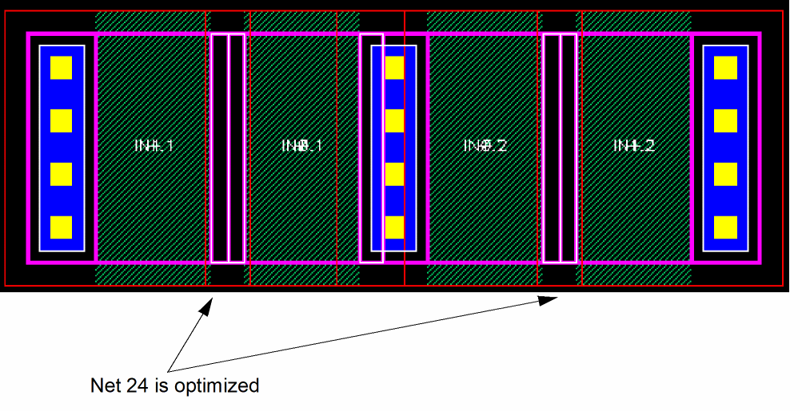
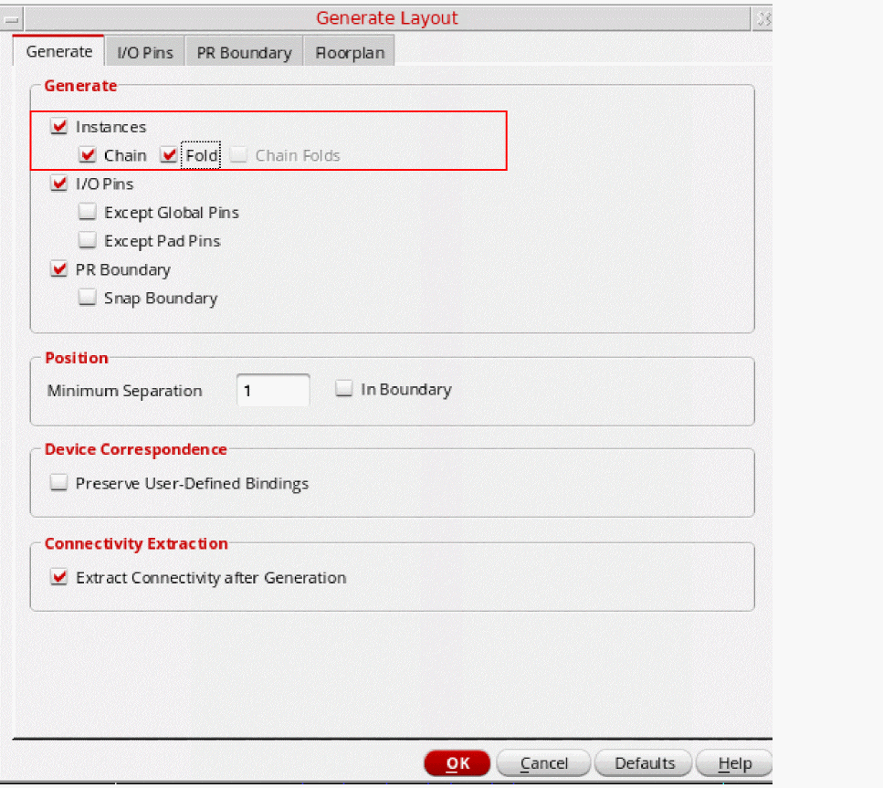

Generating a Layout with Chaining and Folding on Pseudoparallel Nets
When the lxAllowPseudoParallelNets environment variable is set to t, layout generation optimizes pseudoparallel nets for implicit pseudoparallel connections.
This also works with the Generate Selected From Source command.

-
Add the following line to your
.cdsenvfile.layoutXL lxAllowPseudoParallelNets boolean t
- From the layout window menu bar, choose Connectivity – Generate – All From Source.
-
On the Generate tab of the Generate Layout form, select the Chain and Fold options.
 - Set the rest of the options for your layout and click OK.
-
To verify that the pseudoparallel nets are complete, open the Annotation Browser assistant and go to the Connectivity tab.
The pseudoparallel nets in question are no longer listed in the Incomplete Nets category in the browser.
Related Topics
Return to top